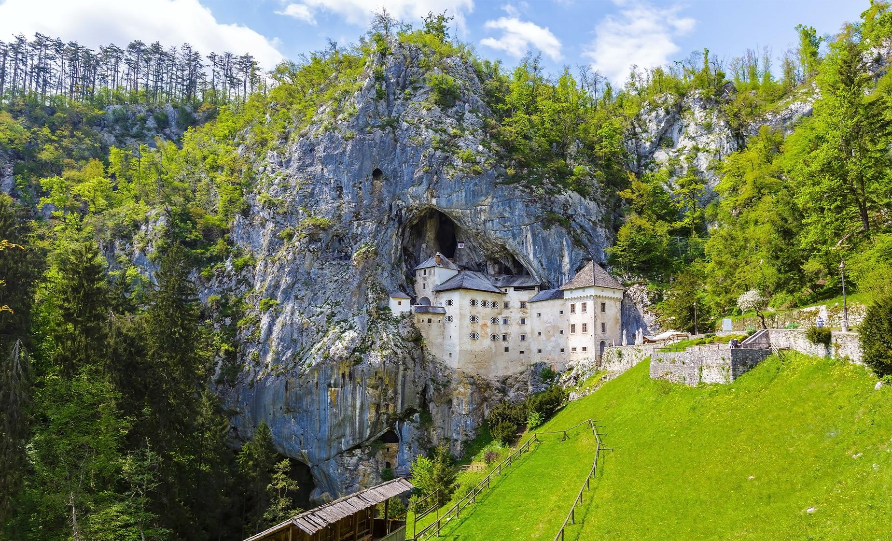
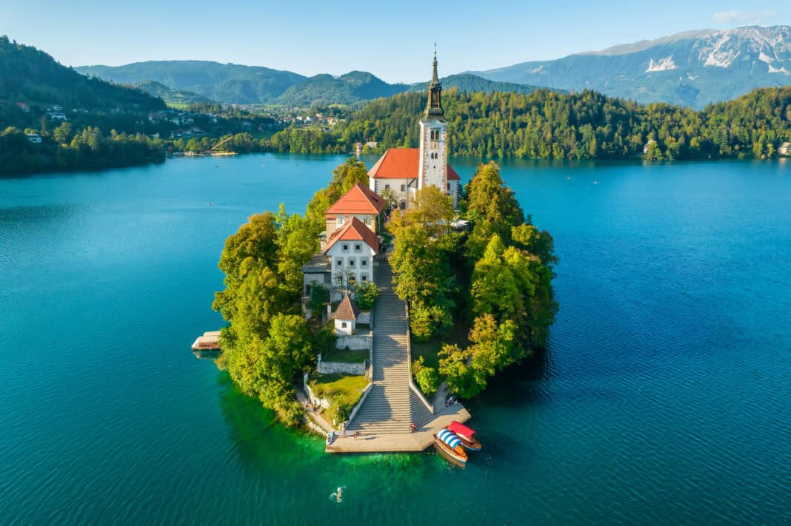
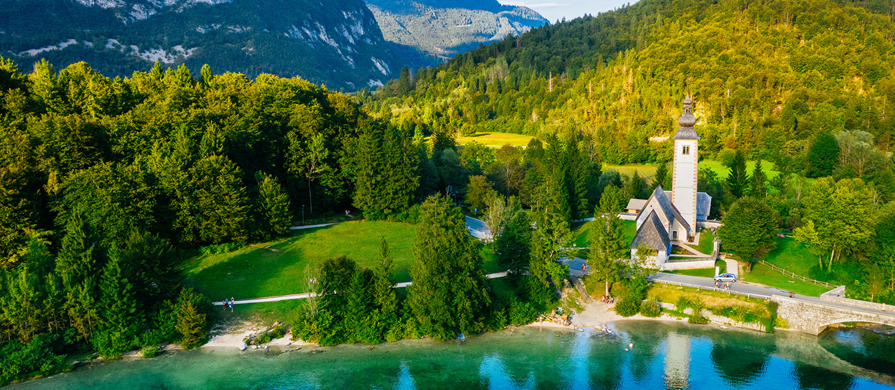
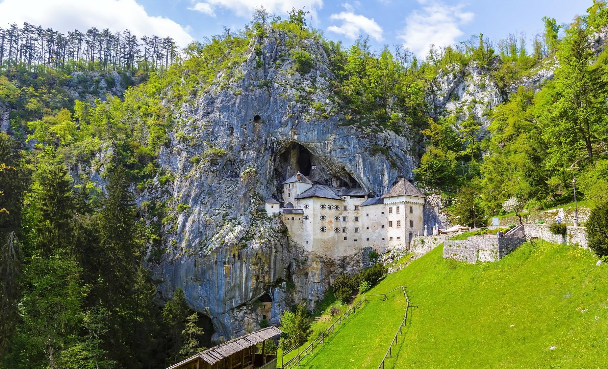
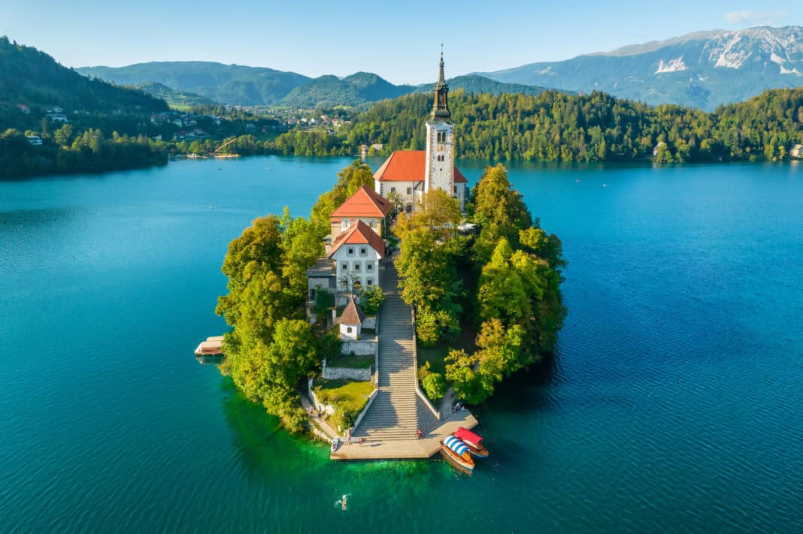
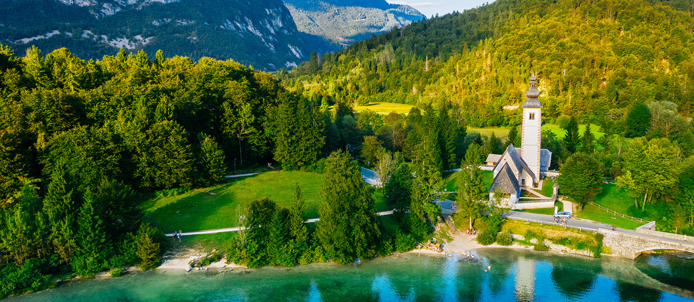

Monuments
Slovenia is home to a wealth of historic and iconic monuments that tell the story of its rich past. From medieval castles perched on
hilltops to centuries-old churches and charming town squares, each monument offers a glimpse into the nation’s heritage and culture.
Explore these landmarks and discover the timeless beauty of Slovenia.
SHOW MORE
SHOW MORE
 




